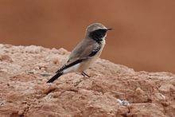
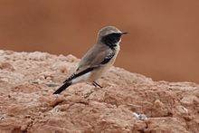

| Desert Wheatear | |
|---|---|
|  | |
| An adult male in summer plumage in Mongolia | |
| Conservation status | |
| Binomial name | |
| Oenanthe deserti (Temminck, 1829) |
| Desert Wheatear | |
|---|---|
|  | |
| An adult male in summer plumage in Mongolia | |
| Conservation status | |
| Binomial name | |
| Oenanthe deserti (Temminck, 1829) |
The Desert Wheatear (Oenanthe deserti) is a wheatear, a small passerine bird that was formerly classed as a member of the Thrush family Turdidae, but is now more generally considered to be an Old World flycatcher, Muscicapidae.
It is a migratory insectivorous species, 14.5 to 15 cm (5¾–6 inches) in length. Both western and eastern forms of the Desert Wheatear are rare vagrants to western Europe.
Although males in summer of its subspecies are more or less distinct, the autumn, female and juvenile plumages are confusing.
The western Desert Wheatear breeds in the Sahara and the northern Arabian peninsula. The eastern race is found in the semi-deserts of central Asia and in winter in Pakistan and northeast Africa.
The upper parts of the male in summer are buff. The underparts are white with a buff tinge on the breast. The black on the face and throat extends to the shoulders, and there is distinct white superciliary stripe.
The best character, in both sexes at all ages, is that the entire tail is black to the level of the uppertail coverts. The female is greyer above and buffer below and has no black on the throat, and in the winter plumage the black on the throat of the male is obscured by white tips.

{kind=link}
{kind=link}